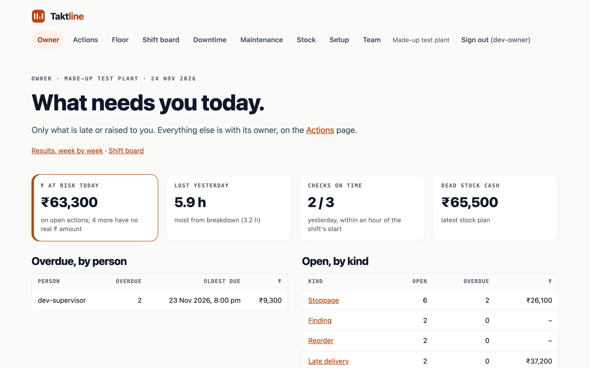
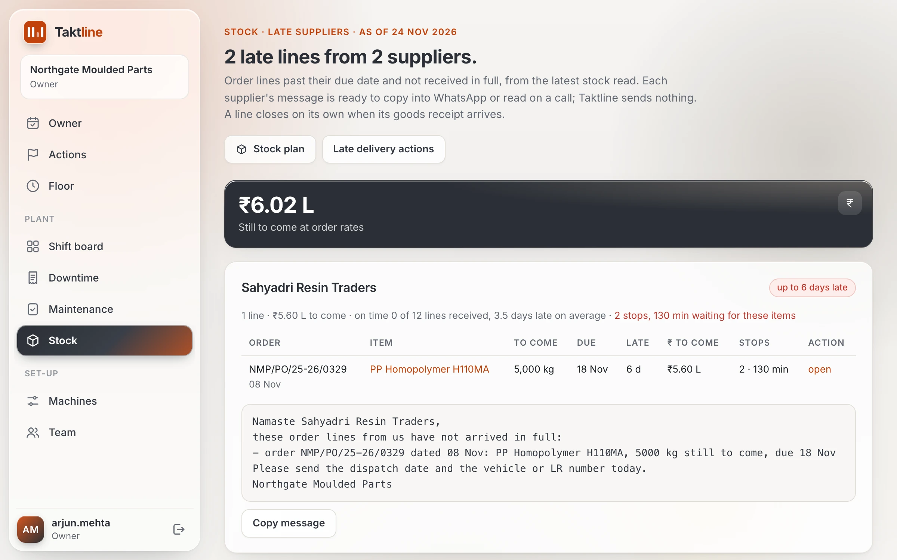
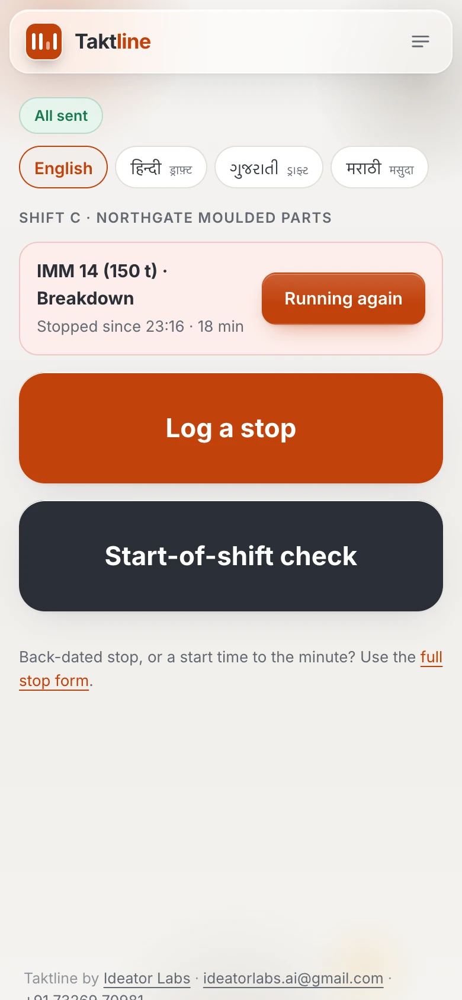

Taktline
TaktlinePlant operations for manufacturers on Tally
Taktline is plant operations software for small and mid-sized manufacturers that keep stock in Tally. Machine stops, faults found on checks, items about to run out and late supplier orders each become an action with an owner, a deadline and proof, and late ones go to the supervisor, then the owner. A Stock-only plan serves distributors.
For plants and distributors

Screen shows sample data, for illustration.
Plants of 20 to 60 machines that run on Tally
- • Owner-run plants in auto components, plastics and packaging
- • Supervisors who track stops in registers, Excel and WhatsApp
- • Distributors who need stock and supplier follow-up only (Stock plan)
Stops, skipped checks and late material are hard to see in time
- • Short stops are rarely written down, so repeat causes go unnoticed.
- • Start-of-shift checks and preventive work slip without anyone being told.
- • Material runs out while a supplier's order is already late, and the link is never made.
How Taktline works
-
Log on the floor
Operators log a stop in a few taps, or start a timer and end it when the machine runs again, and do the start-of-shift check with photos. The phone works offline.
-
Close the shift
Supervisors enter output and rejects per machine. Taktline shows the minutes the output does not account for, so missed stops come to light.
-
Act on each problem
Long stops, faults found on checks, overdue preventive work, items at their reorder point and late orders each open an action with an owner and a deadline.
-
Close with proof
Work closes with a photo, a reading or the Tally entry, and a second person verifies it. Reorders and late deliveries close when the purchase order or goods receipt appears in Tally.
-
See what is late
Supervisors use a shift board. The owner gets one screen and a morning digest with only what is late or raised, plus weekly results counted from what was saved.
Owner screen, supplier chase list and the floor phone
Screens from Taktline. Every name, number and amount on them is sample data, made up for illustration.


How your data is handled
Each plant's records are kept in its own account, and every query is limited to that plant and to what each role may see. Every move on an action goes into a tamper-evident, hash-chained log with its photos and proof. The Tally agent only reads, never writes to Tally, and drops customer names. Notifications are recorded, and nothing goes to suppliers from Taktline. Past registers and Tally exports can be imported to load history.
What a demo looks like
- • Tell us about your plant: machines, shifts, and how you track stops and stock today.
- • We set up a short call and walk you through Taktline.
- • We share pricing on the call, before anything costs money.